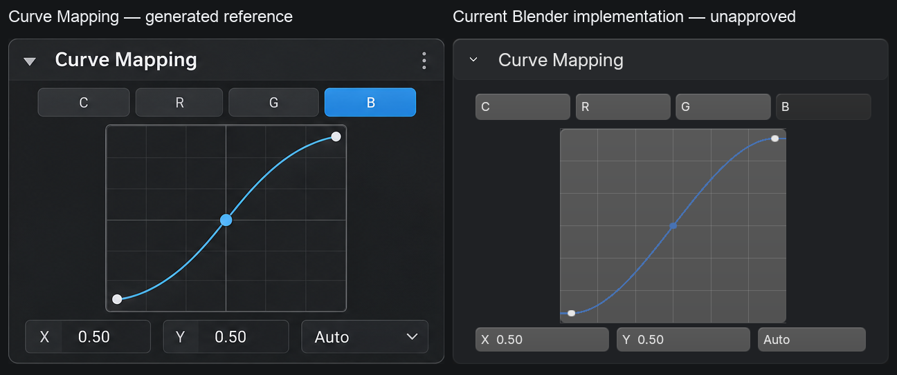
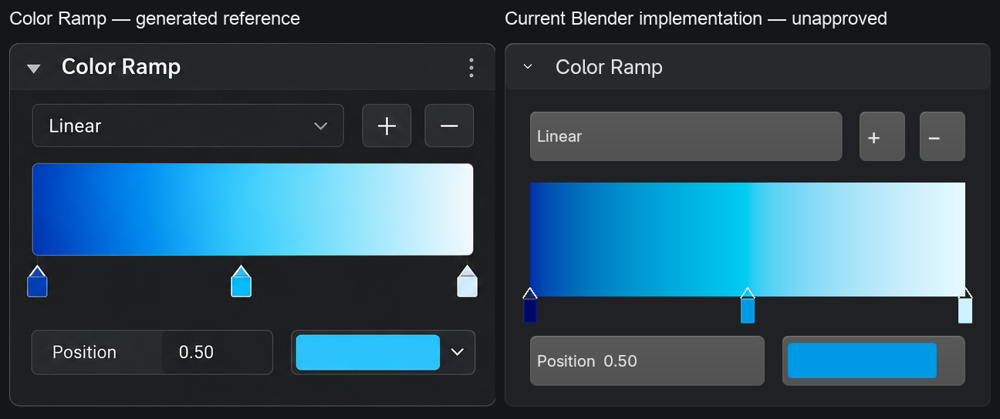
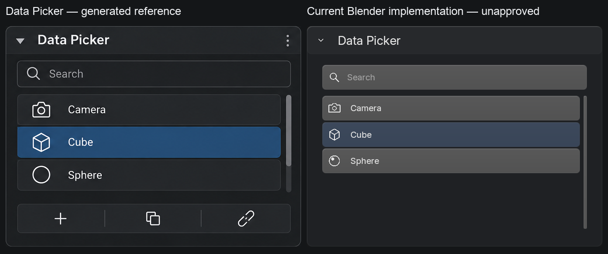
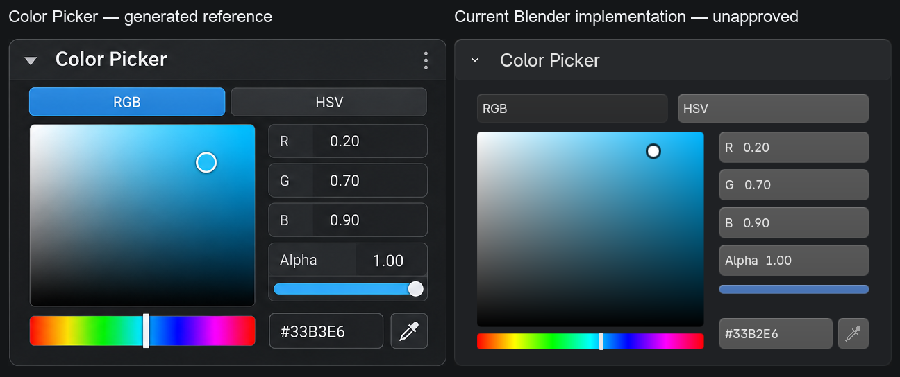

Generated references vs Blender implementations
Reference left · actual Blender 5.2.2 / Metal capture right. All four controls from the generated sheet. Unapproved prototypes; Tyler performs visual QA. No reference pixels were used to render implementations.
Curve Mapping

Color Ramp

Data Picker

Color Picker

Capture provenance · Full-resolution contact sheet